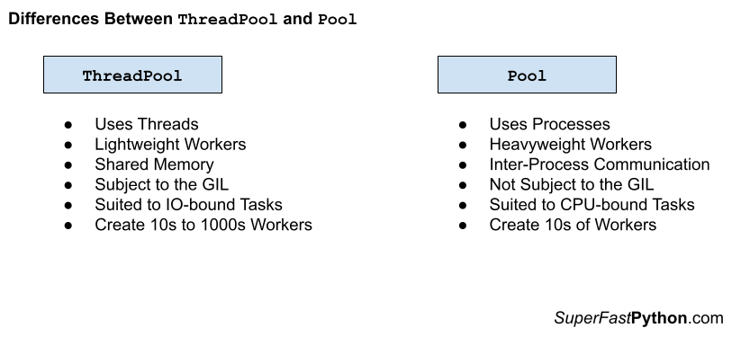

ThreadPool vs. Multiprocessing Pool in Python
You can use multiprocessing.pool.ThreadPool class for IO-bound tasks and multiprocessing.pool.Pool class for CPU-bound tasks.
In this tutorial, you will discover the difference between the ThreadPool and Pool classes and when to use each in your Python projects.
Let's get started.
What is the Pool
The multiprocessing.pool.Pool class provides a process pool in Python.
Note, that you can access the process pool class via the helpful alias multiprocessing.Pool.
It allows tasks to be submitted as functions to the process pool to be executed concurrently.
A process pool object which controls a pool of worker processes to which jobs can be submitted. It supports asynchronous results with timeouts and callbacks and has a parallel map implementation.
-- MULTIPROCESSING — PROCESS-BASED PARALLELISM
A process pool is a programming pattern for automatically managing a pool of worker processes.
The pool can provide a generic interface for executing ad hoc tasks with a variable number of arguments, much like the target property on the Process object, but does not require that we choose a process to run the task, start the process, or wait for the task to complete.
To use the process pool, we must first create and configure an instance of the class.
For example:
...
# create a process pool
pool = multiprocessing.pool.Pool(...)By default, the process pool will have one worker process for each logical CPU core in your system.
We can specify the number of workers to create via an argument to the class constructor.
For example:
...
# create a process pool with 4 workers
pool = multiprocessing.pool.Pool(4)Tasks are issued in the process pool by specifying a function to execute that may or may not have arguments and may or may not return a value.
We can issue one-off tasks to the process pool using functions such as apply() or we can apply the same function to an iterable of items using functions such as map().
For example:
...
# issues tasks for execution
for result in pool.map(task, items):
# ...
Tasks with multiple arguments are issued synchronously to the process pool using the starmap() function.
We can also issue tasks asynchronously to the process pool and receive a multiprocessing.AsyncResult in return provides a handle on the issued task or tasks.
Tasks can be issued asynchronously using the apply_async(), map_async(), and starmap_async().
For example:
...
# issues tasks for execution asynchronously
result = pool.map_async(task, items)
# ...
Once we have finished with the process pool, it can be closed and resources used by the pool can be released.
For example:
...
# close the process pool
pool.close()You can learn more about the process pool in the tutorial:
Now that we are familiar with the Pool class, let's take a look at ThreadPool.
What is the ThreadPool
The multiprocessing.pool.ThreadPool class in Python provides a pool of reusable threads for executing ad hoc tasks.
A thread pool object which controls a pool of worker threads to which jobs can be submitted.
-- multiprocessing — Process-based parallelism
The ThreadPool class extends the Pool class and therefore has the same API.
Although the ThreadPool class is in the multiprocessing module it offers thread-based concurrency.
Recall that a thread is a thread of execution. Each thread belongs to a process and can share memory (state and data) with other threads in the same process. In Python, like many modern programming languages, threads are created and managed by the underlying operating system, so-called system threads or native threads.
We can create a thread pool by instantiating the ThreadPool class and specifying the number of threads via the "processes" argument; for example:
...
# create a thread pool
pool = ThreadPool(processes=10)We can issue one-off tasks to the ThreadPool using methods such as apply() or we can apply the same function to an iterable of items using methods such as map().
The map() function matches the built-in map() function and takes a function name and an iterable of items. The target function will then be called for each item in the iterable as a separate task in the thread pool. An iterable of results will be returned if the target function returns a value.
For example:
...
# call a function on each item in a list and handle results
for result in pool.map(task, items):
# handle the result...
The ThreadPool class offers many variations on the map() method for issuing tasks, you can learn more in the tutorial:
We can issue tasks asynchronously to the ThreadPool, which returns an instance of an AsyncResult immediately. One-off tasks can be used via apply_async(), whereas the map_async() offers an asynchronous version of the map() method.
The AsyncResult object provides a handle on the asynchronous task that we can use to query the status of the task, wait for the task to complete, or get the return value from the task, once it is available.
For example:
...
# issue a task to the pool and get an asyncresult immediately
result = pool.apply_async(task)
# get the result once the task is done
value = result.get()Once we are finished with the ThreadPool, it can be shut down by calling the close() method in order to release all of the worker threads and their resources.
For example:
...
# shutdown the thread pool
pool.close()The life-cycle of creating and shutting down the thread pool can be simplified by using the context manager that will automatically close the ThreadPool.
For example:
...
# create a thread pool
with ThreadPool(10) as pool:
# call a function on each item in a list and handle results
for result in pool.map(task, items):
# handle the result...
# ...
# shutdown automatically
You can learn more about how to use the ThreadPool class in the tutorial:
Now that we are familiar with the ThreadPool and Pool, let's compare and contrast the two classes.
Comparison of ThreadPool vs. Pool
Since we are familiar with the ThreadPool and Pool classes.
Similarities Between ThreadPool and Pool
The ThreadPool and Pool classes are very similar; let's review some of the most important similarities.
1. Both Have the Same API
The ThreadPool class extends the Pool class.
Therefore, they both offer the same API.
This includes the life-cycle methods such as join(), close(), and terminate().
It also includes the methods for issuing tasks such as apply() map(), starmap(), imap(), imap_unordered() and methods for issuing asynchronous tasks including apply_async(), map_async(), and starmap_async().
This similarity defines all other similarities between the classes.
2. Both Classes Manage Pools of Workers
Both classes manage pools of workers for executing ad hoc tasks.
Neither class imposes limits on the types of tasks executed, such as:
- Task duration: long or short tasks.
- Task type: homogeneous or heterogeneous tasks.
In this way, both classes offer pools of generic task worker pools.
3. Both Classes Use AsyncResult
Both classes return instances of the AsyncResult class when issuing asynchronous tasks.
This provides the same interface for querying the status and retrieving results from running asynchronous tasks.
These similarities mean that if you learn how to use one class, you know how to use the other class, for the most part. It also means that program code could be made agnostic to the specific implementation and switch between processes and threads.
Differences Between ThreadPool and Pool
The ThreadPool and Pool classes are also quite different; let's review some of the most important differences.
1. Threads vs. Processes
Perhaps the most important difference is the type of workers used by each class.
As their names suggest, the ThreadPool uses threads internally, whereas the Pool uses processes.
A process has a main thread and may have additional threads. A thread belongs to a process. Both processes and threads are features provided by the underlying operating system.
A process is a higher level of abstraction than a thread.
One aspect of this difference is that a running process can be terminated, whereas a running thread cannot. The Pool and ThreadPool both offer a terminate() method that will terminate all workers, even if they are running. In practice, this only works in the Pool and not the ThreadPool class.
This difference in the unit of concurrency defines all other differences between the two classes.
2. Shared Memory vs. Inter-Process Communication
The classes have important differences in the way they access shared state.
Threads can share memory within a process.
This means that worker threads in the ThreadPool can access the same data and state. These might be global variables or data shared via function arguments. As such, sharing state between threads is straightforward.
Processes do not have shared memory like threads.
Instead, the state must be serialized and transmitted between processes, called inter-process communication. Although it occurs under the covers, it does impose limitations on what data and state can be shared and adds overhead to sharing data.
Processes require that Python objects be pickled before being transmitted, and not all objects can be transmitted, such as file handles and concurrency primitives like Lock and Semaphore. If these objects need to be shared with workers, then a multiprocessing.Manager can be used.
Sharing state between threads is easy and lightweight, and sharing state between processes is harder and heavyweight.
3. GIL vs. no GIL
Multiple threads within a ThreadPool are subject to the global interpreter lock (GIL), whereas multiple child processes in the Pool are not subject to the GIL.
The GIL is a programming pattern in the reference Python interpreter (e.g. CPython, the version of Python you download from python.org).
It is a lock in the sense that it uses synchronization to ensure that only one thread of execution can execute instructions at a time within a Python process.
This means that although we may have multiple threads in a ThreadPool, only one thread can execute at a time.
The GIL is used within each Python process, but not across processes. This means that multiple child processes within a Pool can execute at the same time and are not subject to the GIL.
This has implications for the types of tasks best suited to each class.
Summary of Differences
It may help to summarize the differences between the ThreadPool and the Pool.
ThreadPool
- Uses Threads, not processes.
- Lightweight workers, not heavyweight workers.
- Shared Memory, not inter-process communication.
- Subject to the GIL, not parallel execution.
- Suited to IO-bound Tasks, not CPU-bound tasks.
- Create 10s to 1,000s Workers, not really constrained.
Pool
- Uses Processes, not threads.
- Heavyweight Workers, not lightweight workers.
- Inter-Process Communication, not shared memory.
- Not Subject to the GIL, not constrained to sequential execution.
- Suited to CPU-bound Tasks, probably not IO-bound tasks.
- Create 10s of Workers, not 100s or 1,000s of tasks.
The figure below provides a helpful side-by-side comparison of the key differences between the two classes.

How to Choose ThreadPool or Pool
When should you use the ThreadPool and when should you use the Pool?
Let's review some useful suggestions.
Firstly, let's look at when you should consider using workers in a thread pool or process pool over using custom objects such as threading.Thread and multiprocessing.Process.
When to Use Thread/Process Worker Pools
In this section, we will look at some general cases where it is a good fit to use worker pools, and where it isn't.
Use Worker Pools When...
- Your tasks can be defined by a pure function that has no state or side effects.
- Your task can fit within a single Python function, likely making it simple and easy to understand.
- You need to perform the same task many times, e.g. homogeneous tasks.
- You need to apply the same function to each object in a collection in a for-loop.
Worker pools work best when applying the same pure function on a set of different data (e.g. homogeneous tasks, heterogeneous data).
This makes code easier to read and debug. This is not a rule, just a gentle suggestion.
Don't Use Worker Pools When...
- You have a single task; consider using the Thread or Process class with the target argument.
- You have long-running tasks, such as monitoring or scheduling; consider extending the Thread or Process class.
- Your task functions require state; consider extending the Thread or Process class.
- Your tasks require coordination; consider using a Thread or Process and patterns like a Barrier or Semaphore.
- Your tasks require synchronization; consider using a Thread or Process class and Locks.
- You require a thread trigger on an event; consider using the Thread or Process class.
The sweet spot for worker pools is in dispatching many similar tasks, the results of which may be used later in the program.
Tasks that don't fit neatly into this summary are probably not a good fit for thread pools. This is not a rule, just a gentle suggestion.
Now that we are familiar with the general types of tasks suited to worker pools, let's look at the types of tasks suited to the ThreadPool specifically.
When to Use the ThreadPool
The ThreadPool is powerful and flexible, although is not suited for all situations where you need to run a background task.
In this section, we'll look at broad classes of tasks and why they are or are not appropriate for the ThreadPool.
Use ThreadPool for IO-Bound Tasks
You should use the ThreadPool for IO-bound tasks in Python in general.
An IO-bound task is a type of task that involves reading from or writing to a device, file, or socket connection.
The operations involve input and output (IO), and the speed of these operations is bound by the device, hard drive, or network connection. This is why these tasks are referred to as IO-bound.
CPUs are really fast. Modern CPUs, like a 4GHz, can execute 4 billion instructions per second, and you likely have more than one CPU in your system.
Doing IO is very slow compared to the speed of CPUs.
Interacting with devices, reading and writing files, and socket connections involve calling instructions in your operating system (the kernel), which will wait for the operation to complete. If this operation is the main focus for your CPU, such as executing in the main thread of your Python program, then your CPU is going to wait many milliseconds, or even many seconds, doing nothing.
That is potentially billions of operations that it is prevented from executing.
We can free up the CPU from IO-bound operations by performing IO-bound operations on another thread of execution. This allows the CPU to start the process and pass it off to the operating system (kernel) to do the waiting and free it up to execute in another application thread.
There's more to it under the covers, but this is the gist.
Therefore, the tasks we execute with a ThreadPool should be tasks that involve IO operations.
Examples include:
- Reading or writing a file from the hard drive.
- Reading or writing to standard output, input, or error (stdin, stdout, stderr).
- Printing a document.
- Downloading or uploading a file.
- Querying a server.
- Querying a database.
- Taking a photo or recording a video.
- And so much more.
If your task is not IO-bound, perhaps threads and using a thread pool is not appropriate.
Don't Use ThreadPool for CPU-Bound Tasks
You should probably not use the ThreadPool for CPU-bound tasks in general.
A CPU-bound task is a type of task that involves performing computation and does not involve IO.
CPUs are very fast, and we often have more than one CPU core on a single chip in modern computer systems. We would like to perform our tasks and make full use of multiple CPU cores in modern hardware.
Using threads and thread pools via the ThreadPool class in Python is probably not a path toward achieving this end.
This is because of a technical reason behind the way the Python interpreter was implemented. The implementation prevents two Python operations from executing at the same time inside the interpreter, and it does this with a master lock that only one thread can hold at a time called the global interpreter lock, or GIL.
The GIL is not evil and is not frustrating; it is a design decision in the Python interpreter that we must be aware of and consider in the design of our applications.
I said that you "probably" should not use threads for CPU-bound tasks.
You can and are free to do so, but your code will not benefit from concurrency because of the GIL. It will likely perform worse because of the additional overhead of context switching (the CPU jumping from one thread of execution to another) introduced by using threads.
Additionally, the GIL is a design decision that affects the reference implementation of Python. If you use a different implementation of the Python interpreter (such as PyPy, IronPython, Jython, and perhaps others), then you may not be subject to the GIL and can use threads for CPU-bound tasks directly.
Now that we are familiar with the types of tasks suited to the ThreadPool, let's look at the types of tasks suited to the Pool specifically.
When to Use the Pool
The Pool is powerful and flexible, although is not suited for all situations where you need to run a background task.
In this section, we'll look at broad classes of tasks and why they are or are not appropriate for the Pool.
Use the Pool for CPU-Bound Tasks
You should probably use processes for CPU-bound tasks.
A CPU-bound task is a type of task that involves performing computation and does not involve IO.
The operations only involve data in main memory (RAM) or cache (CPU cache) and performing computations on or with that data. As such, the limit on these operations is the speed of the CPU. This is why we call them CPU-bound tasks.
Examples include:
- Calculating points in a fractal.
- Estimating Pi
- Factoring primes.
- Parsing HTML, JSON, etc. documents.
- Processing text.
- Running simulations.
CPUs are very fast, and we often have more than one CPU. We would like to perform our tasks and make full use of multiple CPU cores in modern hardware.
Using processes and process pools via the Pool class in Python is probably the best path toward achieving this end.
Don't Use Pool for IO-Bound Tasks
You can use processes for IO-bound tasks, although the Pool may be a better fit.
An IO-bound task is a type of task that involves reading from or writing to a device, file, or socket connection.
Processes can be used for IO-bound tasks in the same way that threads can be, although there are major limitations to using processes.
- Processes are heavyweight structures; each has at least a main thread.
- All data sent between processes must be serialized.
- The operating system may impose limits on the number of processes you can create.
When performing IO operations, we very likely will need to move data between worker processes back to the main process. This may be costly if there is a lot of data as the data must be pickled at one end and unpickled at the other end. Although this data serialization is performed automatically under the covers, it adds a computational expense to the task.
Additionally, the operating system may impose limits on the total number of processes supported by the operating system, or the total number of child processes that can be created by a process. For example, the limit in Windows is 61 child processes. When performing tasks with IO, we may require hundreds or even thousands of concurrent workers (e.g. each managing a network connection), and this may not be feasible or possible with processes.
Nevertheless, the Pool may be appropriate for IO-bound tasks if the requirement on the number of concurrent tasks is modest (e.g. less than 100) and the data sharing requirements between processes is also modest (e..g processes don't share much or any data).
Takeaways
You now know the difference between ThreadPool and Pool and when to use each.